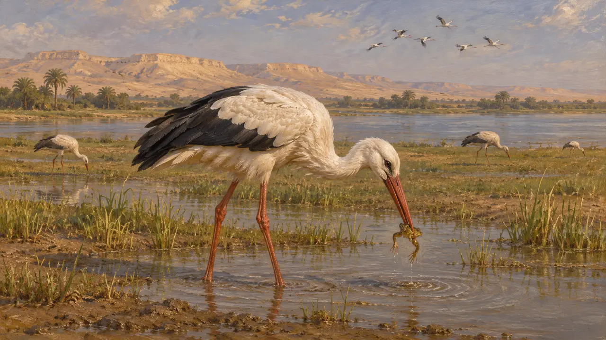
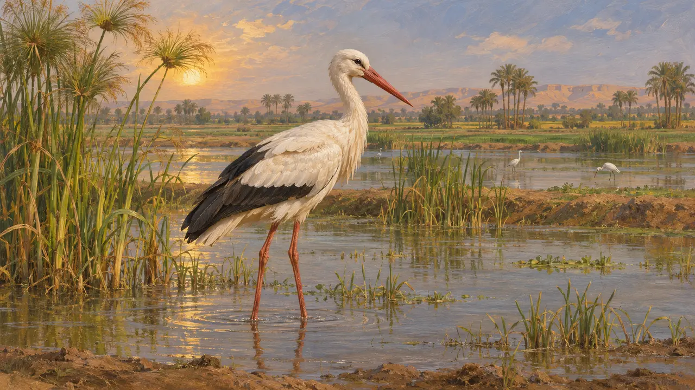
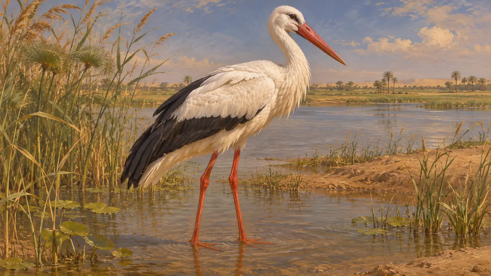
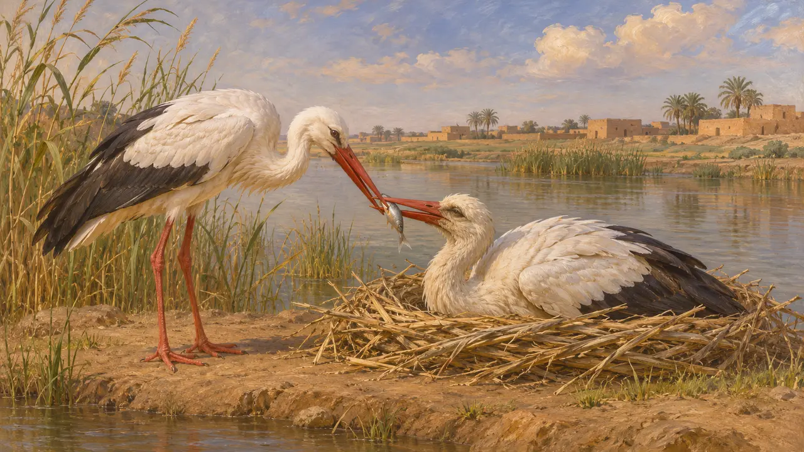

Encyclopédie › Faune et climat

La cigogne blanche
Un échassier migrateur du Proche-Orient et de l'Égypte, 559-479 av. J.-C.
Dans le jeu : Niveau 1 : Le Tombeau du fondateur, Niveau 2 : Le Porte-lance, Niveau 3 : Le Mensonge, Niveau 4 : La Terrasse, Niveau 5 : La Charte, Niveau 6 : Le Pont de bateaux, Niveau 7 : Sardes brûle, Niveau 8 : La Baie de Marathon, Niveau 9 : Le Canal, Niveau 10 : Les Portes chaudes, Niveau 11 : Le Dénouement
La cigogne blanche niche dans toute l'Europe et l'Asie occidentale et hiverne en Afrique ; son passage par le Levant et la vallée du Nil était donc probablement un spectacle régulier dans l'empire perse. Les documents perses conservés n'en disent presque rien. L'essentiel de ce que l'on peut dire des cigognes à cette époque repose sur les habitudes connues de l'oiseau, non sur des textes du temps.
Dans le jeu : Le jeu dessine des cigognes comme simple décor sur les terres sauvages de onze niveaux, pataugeant dans les eaux peu profondes et les champs détrempés ; aucune règle ne les prend en compte. Leur présence à Memphis reflète l'habitat hivernal des cigognes blanches d'Europe.

Mœurs de l'oiseau
ContestéLa cigogne blanche se nourrit de grenouilles, de poissons, d'insectes et de petits animaux dans les eaux peu profondes et les prairies humides. Les populations européennes migrent en Afrique pour l'hiver, le plus souvent par la route orientale qui traverse le Levant et descend le long du Nil. Aucune source de l'époque ne le décrit ; le tableau provient donc du comportement moderne de l'oiseau, que l'on suppose, sans pouvoir le prouver, à peu près identique alors.
Modern ornithology, not a source of the period

Les cigognes en Égypte
ContestéLa plaine inondable du Nil offrait aux échassiers des champs détrempés et des marais. Les scènes de marais égyptiennes montrent de nombreux oiseaux, mais l'identification d'espèces précises dans les scènes peintes et sculptées reste souvent incertaine ; on ne peut donc les tenir pour une preuve solide en faveur des cigognes. L'Égypte passa sous domination perse après la conquête de Cambyse en 525.
Egyptian marsh scenes; species identification is uncertain

Ce que disent les auteurs grecs
Récit antiqueHérodote décrit les animaux égyptiens, dont l'ibis et l'hippopotame, mais ne donne aucun passage clair sur la cigogne. Aristote a discuté plus tard de la cigogne et de sa migration, mais il écrivait après l'époque perse. Rien dans les sources utilisées ici ne permet d'affirmer que les Perses ou les Grecs de 500 avaient des croyances particulières sur les cigognes.
Herodotus 2.65-76 on Egyptian animals

Les cigognes de la tradition tardive et la piété filiale
Légende tardiveUne tradition selon laquelle les cigognes prennent soin de leurs parents âgés apparaît dans des écrits grecs et romains plus tardifs ; elle relève de la fable morale. Elle ne dit rien des attitudes des Perses et ne doit pas être projetée sur les VIe ou Ve siècles.
Later Greek and Roman natural-history lore
Sources
- Herodotus 2.65-76
- Aristotle, History of Animals